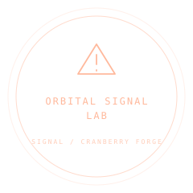

INDEPENDENT TOOLCombat telegraphs
Signal
Make danger readable.
Clear attack warnings. Matching hit checks. One shape the player can trust.
MIT LICENSEv0.1.0MODULAR BY DESIGN

—TARGETS IN FOOTPRINT
—SCENE DRAW CALLS
—CHARGE
Highlighted targets use the package’s actual containment query.
Tell them what’s coming.
CHOOSE A STUDY
VISUALS THAT AGREE WITH GAMEPLAY
Fair fights
Fair fights
start here.
Circle, cone or beam. Charge it, project it onto your terrain, then query the exact same footprint when the attack lands.
attack.js
FROM SHOWCASE TO YOUR PROJECT
Take the good parts with you.
Shape the warning, test its footprint, and connect the same area checks to combat.
Download the archive, then install locally.
npm install ./cranberry-forge-signal-0.1.0.tgz three@0.180.0